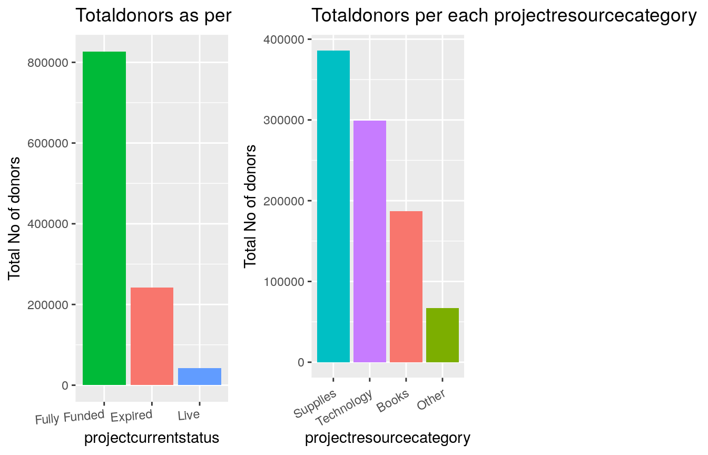

Donor Choose Extensive data Analysis
2018-09-15
Please UPVOTE if you like the Kernel and comment if there are any improvements/mistakes
1 Introduction
Founded in 2000 by a Bronx history teacher,
DonorsChoose.orghas raised $685 million for America’s classrooms. Teachers at three-quarters of all the public schools in the U.S. have come to DonorsChoose.org to request what their students need, making DonorsChoose.org the leading platform for supporting public education. To date, 3 million people and partners have funded 1.1 million DonorsChoose.org projects. But teachers still spend more than a billion dollars of their own money on classroom materials. To get students what they need to learn, the team at DonorsChoose.org needs to be able to connect donors with the projects that most inspire them.
2 Loading Libraries and Importing Data
library('tidyverse')
library('data.table')
library('gridExtra')
library('tidytext') # text analysis
library('tm')
library(wordcloud)
library(gridExtra)
library(highcharter)
library(lubridate)rm(list=ls())
fillColor = "#FFA07A"
fillColor2 = "#F1C40F"
donations <- as.tibble(fread("../input/Donations.csv"))##
Read 0.0% of 4687884 rows
Read 7.3% of 4687884 rows
Read 13.2% of 4687884 rows
Read 19.0% of 4687884 rows
Read 26.2% of 4687884 rows
Read 35.0% of 4687884 rows
Read 35.4% of 4687884 rows
Read 46.7% of 4687884 rows
Read 57.6% of 4687884 rows
Read 61.0% of 4687884 rows
Read 71.2% of 4687884 rows
Read 77.6% of 4687884 rows
Read 79.4% of 4687884 rows
Read 90.9% of 4687884 rows
Read 4687884 rows and 7 (of 7) columns from 0.569 GB file in 00:00:36donors <- as.tibble(fread("../input/Donors.csv"))
projects <- read_csv("../input/Projects.csv",col_types = cols(
X1 = col_integer(),
`Project ID` = col_character(),
`School ID` = col_character(),
`Teacher ID` = col_character(),
`Teacher Project Posted Sequence` = col_integer(),
`Project Type` = col_character(),
`Project Title` = col_character(),
`Project Essay` = col_character(),
`Project Subject Category Tree` = col_character(),
`Project Subject Subcategory Tree` = col_character(),
`Project Grade Level Category` = col_character(),
`Project Resource Category` = col_character(),
`Project Cost` = col_character(),
`Project Posted Date` = col_date(format = ""),
`Project Current Status` = col_character(),
`Project Fully Funded Date` = col_date(format = "")))
resources <- read_csv("../input/Resources.csv")
schools <- read_csv("../input/Schools.csv")
teachers <- read_csv("../input/Teachers.csv")3 DonorChoose Solution steps
DonorsChoose.org has funded over 1.1 million classroom requests through the support of 3 million donors, the majority of whom were making their first-ever donation to a public school. If DonorsChoose.org can motivate even a fraction of those donors to make another donation, that could have a huge impact on the number of classroom requests fulfilled.A good solution will enable DonorsChoose.org to build targeted email campaigns recommending specific classroom requests to prior donors.
We need to build a Recommender System so that we can target email campaigns recommending specific classroom requests to donors.We need to send Email to donors who has donated only once based on the behavior and past donations.
1.Exploratory Data Analysis - NLP
2. Identifying the factors influencing project status and Building a Model to predict the projects which will get EXPIRED.
3.Build a Recommender and Suggest Expired projects to specific donors
4 Exploratory Data Analysis
4.1 Donations
4.1.1 Donation Amount
donations <- donations %>%
rename(DonationAmount = `Donation Amount`)%>%
rename(donationoptionaldonation = `Donation Included Optional Donation`) %>%
rename(donationrecieveddate = `Donation Received Date`) %>%
rename(donorcartsequence = `Donor Cart Sequence`)options(scipen = 99)
p1 = ggplot(donations,aes(x= donationoptionaldonation)) +
geom_bar(fill = "blue")
p2 = ggplot(donations,aes(x= DonationAmount)) +
geom_histogram(fill = "blue")
p3 = ggplot(donations,aes(x= as.Date(donationrecieveddate))) +
geom_density(color = "blue")
p4 = ggplot(donations,aes(x= donorcartsequence)) +
geom_histogram(fill = "blue")
grid.arrange(p1,p2,p3,p4,ncol = 2)4.2 Donors
4.2.1 Donors City,State,Is Donor Teacher and Donors Zip Code
donors <- donors %>%
rename(DonorState = `Donor State`) %>%
rename(donorcity = `Donor City`) %>%
rename(donoristeacher = `Donor Is Teacher`) %>%
rename(donorzip = `Donor Zip`)
p3 = donors %>%
count(donorcity) %>%
arrange(desc(n)) %>%
filter(n>10000 & n < 50000) %>%
ggplot(aes(reorder(donorcity, -n, FUN = min), n, fill = donorcity)) +
geom_col() +
theme(legend.position = "none", axis.text.x = element_text(angle = 90,hjust=1, vjust=0.9)) +
labs(x = 'City',y = 'Total No of donors') +
ggtitle("Totaldonors per each city")
p4 = donors %>%
count(DonorState) %>%
arrange(desc(n)) %>%
filter(n>47000) %>%
ggplot(aes(reorder(DonorState, -n, FUN = min), n, fill = DonorState)) +
geom_col() +
theme(legend.position = "none", axis.text.x = element_text(angle = 90,hjust=1, vjust=0.9)) +
labs(x = 'State',y = 'Total No of donors') +
ggtitle("Totaldonors per each state")
p5 = ggplot(donors,aes(x= (donoristeacher))) +
geom_bar(fill = "blue")
p6 = donors %>%
count(donorzip) %>%
arrange(desc(n)) %>%
filter (n <50000 & n > 20000) %>%
ggplot(aes(reorder(donorzip, -n, FUN = min), n, fill = donorzip)) +
geom_col() +
theme(legend.position = "none", axis.text.x = element_text(angle = 90,hjust=1, vjust=0.6)) +
labs(x = 'donorzip',y = 'Total No of donors') +
ggtitle("Totaldonors per each donorzip code")
grid.arrange(p3,p4,p5,p6,ncol=2)Most Popular Donor Cities are : Chicago New York Brooklyn Los Angeles San Francisco Most Popular Donor States : California New York Texas Florida Illnois Most Popular ZipCodes : 606,945,100,112
More donors are in California
4.3 Projects
projects <- projects %>%
rename(teacherprojectpostedsequence = `Teacher Project Posted Sequence`) %>%
rename(projecttype = `Project Type`) %>%
rename(projecttitle = `Project Title`) %>%
rename(projectessay = `Project Essay`) %>%
rename(projectsubjectcategory = `Project Subject Category Tree`) %>%
rename(projectsubjectsubcategory=`Project Subject Subcategory Tree`) %>%
rename(projectgradelevelcategory=`Project Grade Level Category`) %>%
rename(projectresourcecategory=`Project Resource Category`) %>%
rename(projectcost =`Project Cost`) %>%
rename(projectcurrentstatus=`Project Current Status`) %>%
rename(projectfullyfundeddate=`Project Fully Funded Date`) %>%
rename(projectposteddate = `Project Posted Date`)4.3.1 Exploring Projects - projecttype,projectgradelevelcategory,projectcost,projectcurrentstatus
options(scipen = 99)
q1 = ggplot(projects,aes(x=teacherprojectpostedsequence)) +
geom_histogram(fill="blue") +
scale_x_continuous(limits = c(0,30)) +
theme(legend.position = "none", axis.text.x = element_text(angle = 0,hjust=1, vjust=0.9)) +
labs(x = 'teacherprojectpostedsequence',y = 'Total No of donors') +
ggtitle("Totaldonors per each teacherprojectpostedsequence")
q2 = projects %>%
count(projecttype) %>%
arrange(desc(n)) %>% head(3) %>%
ggplot(aes(reorder(projecttype, -n, FUN = min), n, fill = projecttype)) +
geom_col() +
theme(legend.position = "none", axis.text.x = element_text(angle = 10,hjust=1, vjust=0.9)) +
labs(x = 'projecttype',y = 'Total No of donors') +
ggtitle("Totaldonors per each projecttype")
q6 = projects %>%
count(projectgradelevelcategory) %>%
arrange(desc(n)) %>%
filter(n > 10000) %>%
ggplot(aes(reorder(projectgradelevelcategory, -n, FUN = min), n, fill = projectgradelevelcategory)) +
geom_col() +
theme(legend.position = "none", axis.text.x = element_text(angle = 10,hjust=1, vjust=0.9)) +
labs(x = 'projectgradelevelcategory',y = 'Total No of donors') +
ggtitle("Totaldonors per each projectgradelevelcategory")
projects$projectcost= str_replace(projects$projectcost,"\\$","")
projects$projectcost = as.numeric(projects$projectcost)
q9 = ggplot(projects,aes(x = projectcost)) +
geom_histogram(fill = "blue") +
labs(x= 'Project Cost',y = 'Count') +
ggtitle('Distribution of Project Cost')
q11 = projects %>%
filter(!is.na(projectcurrentstatus)) %>%
count(projectcurrentstatus) %>%
arrange(desc(n)) %>%
head(4) %>%
ggplot(aes(reorder(projectcurrentstatus, -n, FUN = min), n, fill = projectcurrentstatus)) +
geom_col() +
theme(legend.position = "none", axis.text.x = element_text(angle =5,hjust=1, vjust=0.9)) +
labs(x = 'projectcurrentstatus',y = 'Total No of donors') +
ggtitle("Totaldonors as per project current status")
grid.arrange(q1,q2,q6,q9,ncol = 2)
pl1 = projects %>%
count(projectresourcecategory) %>%
arrange(desc(n)) %>%
filter(n > 50000) %>%
ggplot(aes(reorder(projectresourcecategory, -n, FUN = min), n, fill = projectresourcecategory)) +
geom_col() +
theme(legend.position = "none", axis.text.x = element_text(angle = 30,hjust=1, vjust=0.9)) +
labs(x = 'projectresourcecategory',y = 'Total No of donors') +
ggtitle("Totaldonors per each projectresourcecategory")
grid.arrange(q11,pl1,ncol = 3)
q10 = ggplot(projects,aes(x = projectfullyfundeddate )) +
geom_histogram(fill = "blue") +
labs(x= 'Project fullyfundeddate ',y = 'Count') +
ggtitle('Distribution of Project fullyfundeddate ')
q15 = projects %>%
count(projectsubjectsubcategory) %>%
arrange(desc(n)) %>%
filter(n > 27000) %>%
ggplot(aes(reorder(projectsubjectsubcategory, -n, FUN = min), n, fill = projectsubjectsubcategory)) +
geom_col() +
theme(legend.position = "none", axis.text.x = element_text(angle = 90,hjust=1, vjust=0.9)) +
labs(x = 'projectsubjectcategory',y = 'Total No of donors') +
ggtitle("Totaldonors per each projectsubjectsubcategory")
grid.arrange(q10,q15,ncol = 2)
4.4 Resources
4.4.1 Resource Item Price,Quantity,Vendor Name
resources <- resources %>%
rename(resourceitemname = `Resource Item Name`) %>%
rename(resourcequantity = `Resource Quantity`) %>%
rename(resourceunitprice = `Resource Unit Price`) %>%
rename(resourcevendorname = `Resource Vendor Name`)
r1 = resources %>%
count(resourceitemname) %>%
arrange(desc(n)) %>%
filter(n > 5000) %>%
ggplot(aes(reorder(resourceitemname, -n, FUN = min), n, fill = resourceitemname)) +
geom_col() +
theme(legend.position = "none", axis.text.x = element_text(angle = 30,hjust=1, vjust=0.9)) +
labs(x = 'Resource Item Names',y = 'Total No of donors') +
ggtitle("Totaldonors as per Resource Item Names")
r3= resources %>%
count(resourcevendorname) %>%
arrange(desc(n)) %>%
filter(n > 100000) %>%
ggplot(aes(reorder(resourcevendorname , -n, FUN = min), n, fill = resourcevendorname )) +
geom_col() +
theme(legend.position = "none", axis.text.x = element_text(angle = 90,hjust=1, vjust=0.9)) +
labs(x = 'resourcevendorname',y = 'Total No of donors') +
ggtitle("Totaldonors as per resourcevendorname ")
grid.arrange(r1,r3,ncol = 2) options(scipen = 99)
resources %>%
count(resourcequantity) %>%
arrange(desc(n)) %>%
filter(n > 750000) %>%
ggplot(aes(reorder(resourcequantity , -n, FUN = min), n, fill = resourcequantity )) +
geom_col() +
theme(legend.position = "none", axis.text.x = element_text(angle = 90,hjust=1, vjust=0.9)) +
labs(x = 'resourcequantity',y = 'Total No of donors') +
ggtitle("Totaldonors as per resource quantity ") 5 TEXT ANALYTICS - NLP - Understanding Text Features

A
tokenis a meaningful unit of text, most often a word, that we are interested in using for further analysis, and tokenization is the process of splitting text into tokens.
We need to both break the text into individual tokens (a process called
tokenization) and transform it to a tidy data structure. To do this, we use tidytext’sunnest_tokens()function.
5.1 Project Title WordCloud
titles = projects %>%
unnest_tokens(word,projecttitle) %>%
anti_join(stop_words,by = "word")
layout(matrix(c(1, 2), nrow=2), heights=c(1, 4))
par(mar=rep(0, 4))
plot.new()
text(x=0.5, y=0.5, "Most frequent Project Title words", cex = 1.5)
titles %>%
count(word) %>%
top_n(40, n) %>%
with(wordcloud(word, n, color = c("red4", "black", "darkblue")))
there are a variety of methods and dictionaries that exist for evaluating the opinion or emotion in text. The tidytext package contains several
sentiment lexiconsin the sentiments dataset

##Project Title Sentiment Analysis
titles %>%
inner_join(get_sentiments("bing"), by = "word") %>%
count(word, sentiment, sort = TRUE) %>%
ungroup() %>%
group_by(sentiment) %>%
top_n(10, n) %>%
ungroup() %>%
mutate(word = reorder(word, n)) %>%
ggplot(aes(word, n, fill = sentiment)) +
geom_col(show.legend = FALSE) +
facet_wrap(~sentiment, scales = "free_y") +
labs(y = "Contribution to negative/positive sentiment", x = NULL) +
coord_flip() +
ggtitle("Project Title - Sentiment analysis")6 Identifying the Factors influencing Project funding status
6.1 Is Project GradeLevel Category,Resource Category,Project Type,Project Subject Category,
Project Cost responsible for predicting Project Current Status?options(scipen = 99)
g1 = ggplot(projects,aes(x = projectgradelevelcategory,..count..)) +
geom_bar(aes(fill = projectcurrentstatus),position = "dodge") +
theme(axis.text.x = element_text(angle = 90,hjust=1, vjust=0.9)) +
labs(x = 'Project Grade Level Category',y = 'Proportion of Project Current Status') +
ggtitle("Proportion of Project Current status wrt Project Grade Level Category")
g2 = ggplot(projects,aes(x = projectgradelevelcategory,..count..)) +
geom_bar(aes(fill = projectcurrentstatus),position = "fill") +
theme(axis.text.x = element_text(angle = 90,hjust=1, vjust=0.9)) +
labs(x = 'Project Grade Level Category',y = 'Proportion of Project Current Status') +
ggtitle("Proportion of Project Current status wrt Project Grade Level Category")
options(scipen = 99)
g3 = ggplot(projects,aes(x = projectresourcecategory,..count..)) +
geom_bar(aes(fill = projectcurrentstatus),position = "dodge") +
theme(axis.text.x = element_text(angle = 90,hjust=1,size =5, vjust=0.5)) +
labs(x = 'projectresourcecategory',y = 'Proportion of ProjectCurrentStatus') +
ggtitle("Prop of Project status wrt Grade Level Category")
g4 = ggplot(projects,aes(x = projectresourcecategory,..count..)) +
geom_bar(aes(fill = projectcurrentstatus),position = "fill") +
theme(axis.text.x = element_text(angle = 90,hjust= 1, size = 5,vjust=0.5)) +
labs(x = 'projectresourcecategory',y = 'prop of proj current status') +
ggtitle("Proportion of Project Current status wrt Project Grade Level Category")
g5 = ggplot(projects,aes(x = projecttype,..count..)) +
geom_bar(aes(fill = projectcurrentstatus),position = "dodge") +
theme(axis.text.x = element_text(angle = 90,size = 5,hjust=1, vjust=0.9)) +
labs(x = 'Project Grade Level Category',y = 'Proportion of Project Current Status') +
ggtitle("Proportion of Project Current status wrt Project Grade Level Category")
g6 = ggplot(projects,aes(x = projecttype,..count..)) +
geom_bar(aes(fill = projectcurrentstatus),position = "fill") +
theme(axis.text.x = element_text(angle = 90,size = 6,hjust=1, vjust=0.9)) +
labs(x = 'Project Grade Level Category',y = 'Proportion of Project Current Status') +
ggtitle("Proportion of Project Current status wrt Project Grade Level Category")
g9 = ggplot(projects,aes(x = teacherprojectpostedsequence,..count..)) +
geom_bar(aes(fill = projectcurrentstatus),position = "fill") +
theme(axis.text.x = element_text(angle = 90,hjust=.7, vjust=0.7)) +
labs(x = 'Teacher Project Posted Sequence',y = 'Proportion of Project Current Status') +
ggtitle("Proportion of Project Current status wrt Project Subject Category ")
projects$projectcost = as.numeric(projects$projectcost)
options(scipen = 99)
projects$projectcost <- cut(projects$projectcost, breaks = c(0,100,500,5000,9000),
labels = c("0-100","100-500","500-5000","5000-9000"), include.lowest = TRUE)
g10 = ggplot(projects,aes(x = projects$projectcost,fill = projectcurrentstatus)) +
geom_bar(position = "dodge")
grid.arrange(g1,g2,g9,g10,ncol =2)
grid.arrange(g3,g4,ncol =2) grid.arrange(g5,g6,ncol =2) ggplot(projects,aes(x = projectsubjectcategory,..count..)) +
geom_bar(aes(fill = projectcurrentstatus),position = "dodge") +
theme(axis.text.x = element_text(angle = 90,hjust=.7,size = 4, vjust=0.7)) +
labs(x = 'Project Subject Category Tree',y = 'Proportion of Project Current Status') +
ggtitle("Proportion of Project Current status wrt Project Subject Category ")